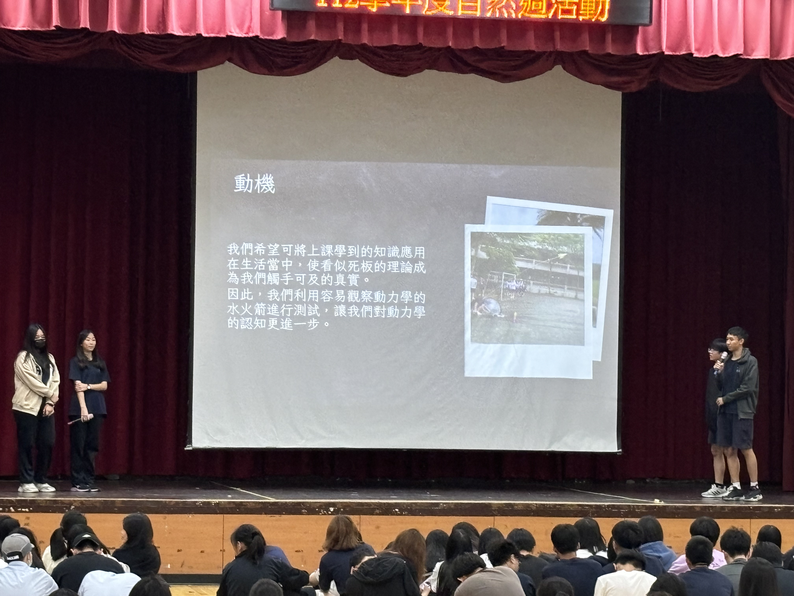
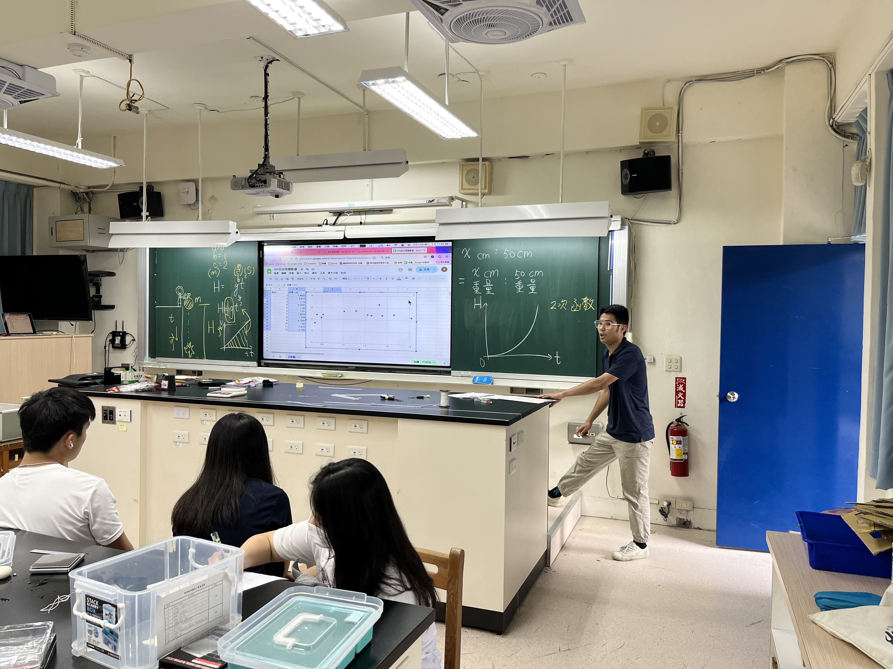

高一自然週：發表自由落體實驗的結論報告。

高一自然週：發表水火箭實驗的結論報告。
高二實驗班成果發表會：科技與生活結合組別，專題名為：高齡者與手機困難之解決方案。
高二實驗班：參與第十一屆捷運盃發表，專題名為：增強式學習與遊戲的結合。
高二實驗班：學生在成果發表會中張貼的壁報。

高一探究與實作：（物理）自由落體理論講述。

高一探究與實作：（物理）自由落體實驗過程。
高一探究與實作：（地科）赫羅圖的認識與實作。
高一探究與實作：（地科）認識台灣融岩地形與位置。

高一多元選修：（程式設計）期末專題發表。

高一多元選修：（程式設計）期末專題發表。

高一多元選修：（程式設計）期末專題發表。
高一暑期多元課程：（進階程式設計）廣度、深度優先搜尋法的教學。
高一暑期多元課程：（進階程式設計）stack、heap實作的理論講解。
高二觀課：（選修物理一）觀課：秀芬老師。觀察萬芳學生上課狀況，並與老師討論學習。